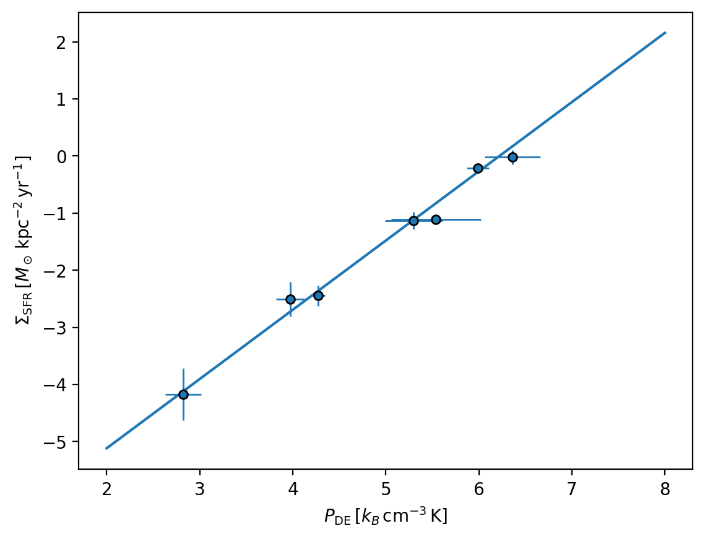
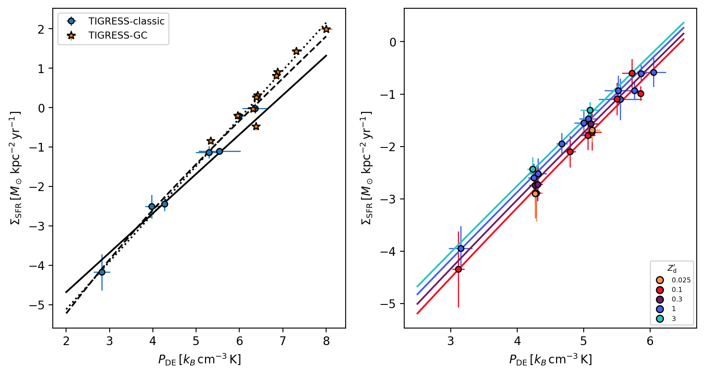
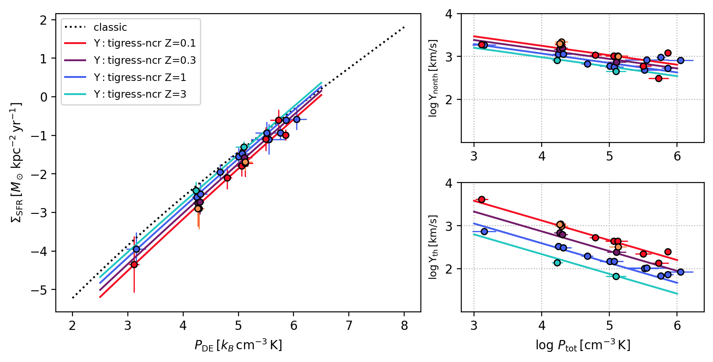

Show code cell content
import matplotlib.pyplot as plt
import sys
sys.path.insert(0, "../")
Show code cell content
%load_ext autoreload
%autoreload 2
Simulation Results and PRFM Theory#
import prfm # noqa: E402
plt.rcParams["figure.dpi"] = 200
---------------------------------------------------------------------------
ModuleNotFoundError Traceback (most recent call last)
Cell In[3], line 1
----> 1 import prfm # noqa: E402
3 plt.rcParams["figure.dpi"] = 200
File ~/work/PRFM/PRFM/book/../prfm/__init__.py:20
4 __description__ = "Python packages for the PRFM theory"
7 from prfm.prfm import (
8 get_scale_height,
9 get_weights,
(...)
17 PRFM,
18 )
---> 20 from prfm import simulations
22 __all__ = [
23 "get_scale_height",
24 "get_weights",
(...)
33 "simulations",
34 ]
File ~/work/PRFM/PRFM/book/../prfm/simulations.py:9
7 import astropy.constants as ac
8 import pandas as pd
----> 9 import xarray as xr
10 import cmasher as cmr
12 import os
ModuleNotFoundError: No module named 'xarray'
data = prfm.simulations.load_sim_data()
# quick plot of TIGRESS-classic points and fitting
# here the points are not identical to OK22
# -- recalculation from history files to get errorbars
p = prfm.simulations.add_one_sim(data["TIGRESS-classic"])
prfm.simulations.add_PSFR_model_line(model="tigress-classic")

# plot for
# here the points are not identical to OK22
# -- recalculation from history files to get errorbars
xf = "Ptot"
yf = "SFR"
for k in ["TIGRESS-classic", "TIGRESS-GC"]:
d = data[k]
x = getattr(d, "log_{}".format(xf))
y = getattr(d, "log_{}".format(yf))
xerr = getattr(d, "log_{}_std".format(xf))
yerr = getattr(d, "log_{}_std".format(yf))
hd_idx = ~(d.Pimag > 0)
if hd_idx.sum() == 0:
p = plt.errorbar(x, y, label=d.paper, marker="o", ls="", mew=1, mec="k")
else:
p = plt.errorbar(
x[hd_idx],
y[hd_idx],
label=f"{d.paper}-HD",
marker="s",
ls="",
mew=1,
mec="k",
)
p = plt.errorbar(
x[~hd_idx],
y[~hd_idx],
label=f"{d.paper}-MHD",
marker="o",
ls="",
mew=1,
mec="k",
)
prfm.simulations.add_PSFR_model_line(model="tigress-classic", color="k", ls="--")
plt.legend()
plt.xlabel(r"$P_{\rm tot}\, [k_B{\rm\,cm^{-3}\,K}]$")
plt.ylabel(r"$\Sigma_{\rm SFR}\, [M_\odot\,{\rm kpc^{-2}\,yr^{-1}}]$")
Text(0, 0.5, '$\\Sigma_{\\rm SFR}\\, [M_\\odot\\,{\\rm kpc^{-2}\\,yr^{-1}}]$')
# all simulations
for i, (k, d) in enumerate(data.items()):
if "table" in k:
continue
p = prfm.simulations.add_one_sim(d)
# P_SFR
prfm.simulations.add_PSFR_model_lines(Wmin=2, Wmax=8)
plt.legend(fontsize="small")
---------------------------------------------------------------------------
ValueError Traceback (most recent call last)
Cell In[23], line 5
3 if "table" in k:
4 continue
----> 5 p = prfm.simulations.add_one_sim(d)
7 # P_SFR
8 prfm.simulations.add_PSFR_model_lines(Wmin=2, Wmax=8)
File ~/Sources/PRFM/book/../prfm/simulations.py:149, in add_one_sim(data, xf, yf, ms)
147 norm = LogNorm(vmin=0.01, vmax=3)
148 colors = cmap(norm(data.Zdust))
--> 149 for x_, y_, xerr_, yerr_, c_ in zip([x,y,xerr,yerr,colors]):
150 p = plt.errorbar(
151 x_,
152 y_,
(...)
162 # label=data.paper,
163 )
164 else:
ValueError: not enough values to unpack (expected 5, got 1)
fig, axes = plt.subplots(1, 2, figsize=(10, 5))
for ax, mlist in zip(axes, [["TIGRESS-classic", "TIGRESS-GC"], ["TIGRESS-NCR"]]):
plt.sca(ax)
for i, k in enumerate(mlist):
d = data[k]
if "NCR" in k:
p = prfm.simulations.add_ncr_sim(d)
else:
p = prfm.simulations.add_one_sim(d)
plt.sca(axes[0])
plt.legend(fontsize="small")
prfm.simulations.add_PSFR_model_lines(Wmin=2, Wmax=8)
plt.sca(axes[1])
prfm.simulations.add_PSFR_ncr_model_lines(Wmin=2.5, Wmax=6.5)

fig, main_ax, side_axes = prfm.simulations.setup_axes(
figsize=(8, 4), width_ratios=(1.5, 1)
)
for k in ["TIGRESS-NCR"]:
d = data[k]
plt.sca(main_ax)
prfm.simulations.add_ncr_sim(d, xf="Ptot", yf="SFR")
for ax, yf in zip(side_axes, ["Y_Pturb", "Y_Pth", "Y_Pimag"]):
plt.sca(ax)
prfm.simulations.add_ncr_sim(d, yf=yf, legend=0)
plt.ylim(1, 4)
plt.yticks([2, 3, 4])
plt.ylabel(
r"$\log \Upsilon_{{\rm {}}}\,[{{\rm km/s}}]$".format(
yf[2:].replace("Pi", "P")[1:]
),
fontsize="small",
)
plt.grid("on", ls=":")
plt.xlabel(r"$\log\,P_{\rm tot}\,[{\rm cm^{-3}\,K}]$")
plt.sca(main_ax)
prfm.simulations.add_PSFR_model_line(
model="tigress-classic-decomp", ls=":", color="k", label="classic "
)
# prfm.simulations.add_PSFR_model_line(
# model="tigress-ncr-decomp", ls="--", color="k", label="NCR Z=1"
# )
prfm.simulations.add_PSFR_ncr_model_lines(Wmin=2.5, Wmax=6.5)
plt.legend(fontsize="small")
<matplotlib.legend.Legend at 0x19058db50>
fig, main_ax, side_axes = prfm.simulations.setup_axes(
nrow=2, figsize=(8, 4), width_ratios=(1.5, 1)
)
for k in ["TIGRESS-NCR"]:
d = data[k]
plt.sca(main_ax)
prfm.simulations.add_ncr_sim(d, xf="Ptot", yf="SFR")
for ax, yf in zip(side_axes, ["Y_Pnonth", "Y_Pth"]):
plt.sca(ax)
prfm.simulations.add_ncr_sim(d, yf=yf, legend=0)
plt.ylim(1, 4)
plt.yticks([2, 3, 4])
plt.ylabel(
r"$\log \Upsilon_{{\rm {}}}\,[{{\rm km/s}}]$".format(
yf[2:].replace("Pi", "P")[1:]
),
fontsize="small",
)
plt.grid("on", ls=":")
plt.xlabel(r"$\log\,P_{\rm tot}\,[{\rm cm^{-3}\,K}]$")
plt.sca(main_ax)
prfm.simulations.add_PSFR_model_line(
model="tigress-classic-decomp", ls=":", color="k", label="classic "
)
prfm.simulations.add_PSFR_ncr_model_lines(Wmin=2.5, Wmax=6.5)
plt.legend(fontsize="small")
for ax, yf in zip(side_axes, ["trb", "th"]):
plt.sca(ax)
prfm.simulations.add_yield_ncr_model_lines(Wmin=3, Wmax=6, comp=yf)
